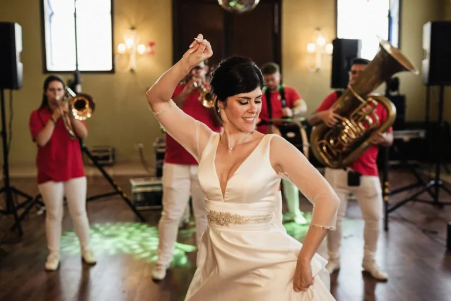
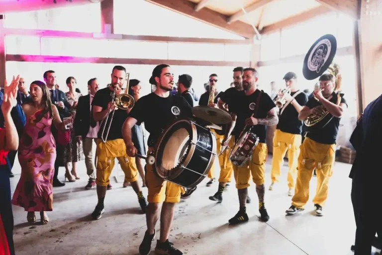

01 / MÚSICA
Grupos y música en vivo
Bandas, dúos, solistas y música para fiestas, bodas y eventos de empresa.
Explorar músicaMúsica en directo, espectáculos de baile y temáticas personalizadas para celebraciones de todos los estilos. Cuéntanos qué buscas y te ayudaremos a encontrar una opción adecuada.
Cuéntanos tu eventoDescubre el catálogo

Bandas, dúos, solistas y música para fiestas, bodas y eventos de empresa.
Explorar música
Espectáculos de baile y actuaciones escénicas para momentos diferentes.
Explorar danza
Diseñamos propuestas temáticas adaptadas al estilo, la historia y el ambiente que imaginas para tu evento.
Explorar temáticas
Alternativas para recepciones, celebraciones y pistas de baile.
Consultar disponibilidad
Cumpleaños, aniversarios, comuniones y otras fiestas especiales.
Solicitar orientación
Espectáculos musicales y propuestas de animación para encuentros profesionales.
Hablar del eventoCada propuesta se prepara atendiendo al lugar, fecha, estilo y necesidades del evento. No enviamos precios automáticos sin revisar antes los detalles.
Empezar una solicitudShow Planner Spain cuenta con una ficha pública en Celebrents para solicitudes de música y espectáculos. La contratación y el contacto se realizan conforme al funcionamiento de esa plataforma.
Ver perfil en Celebrents